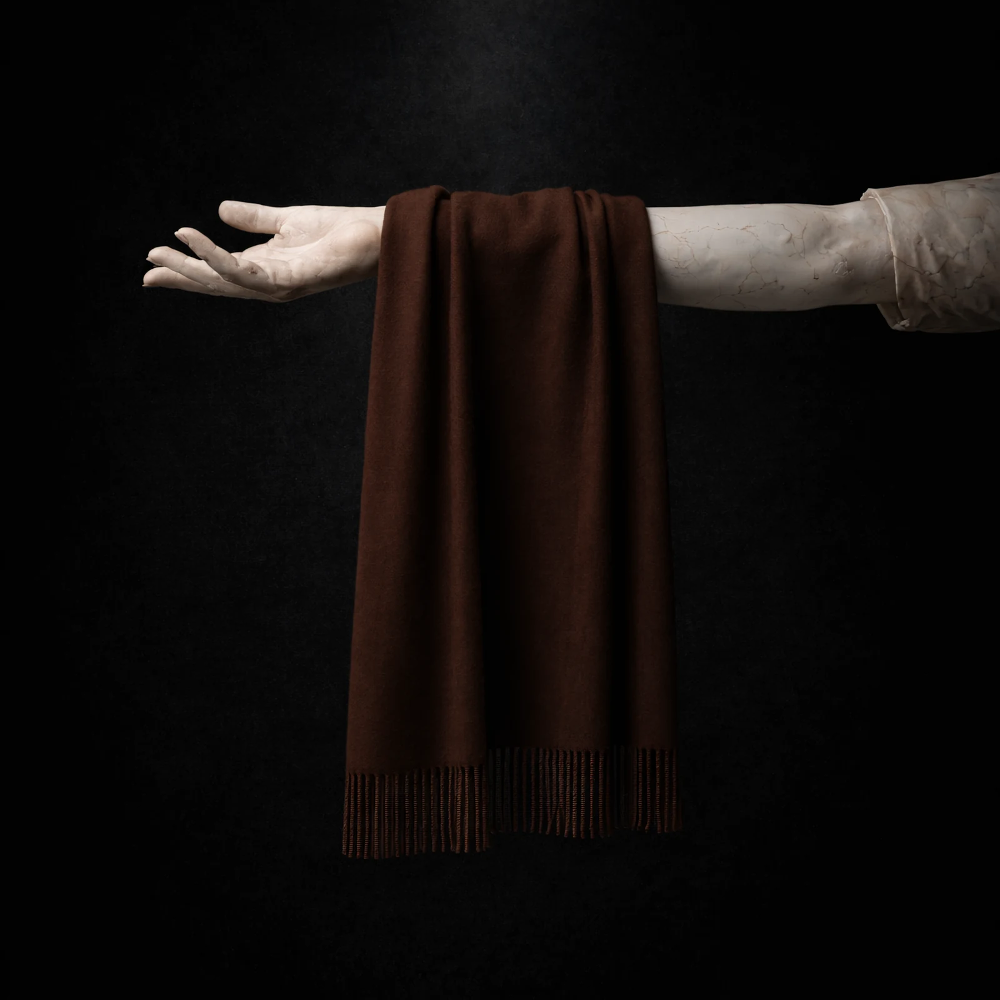
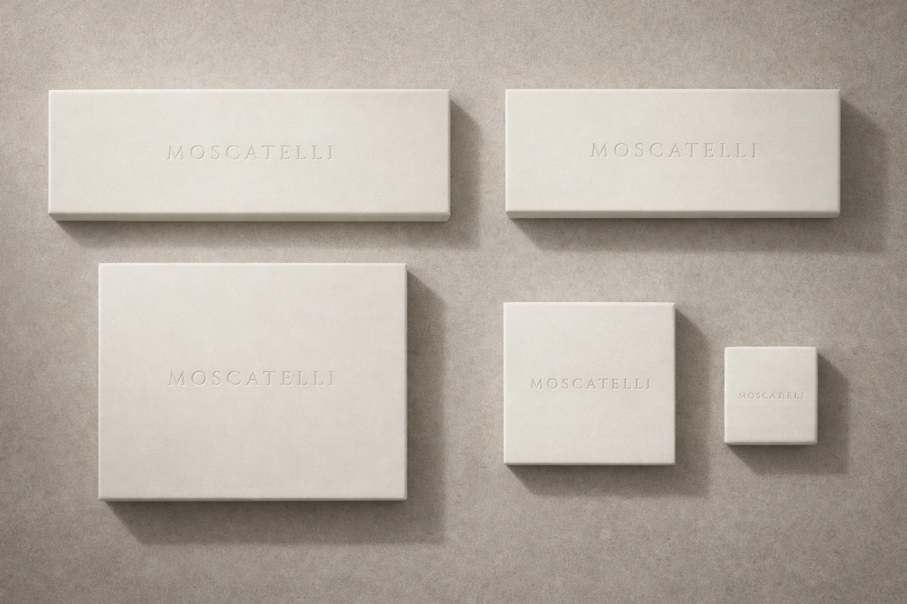
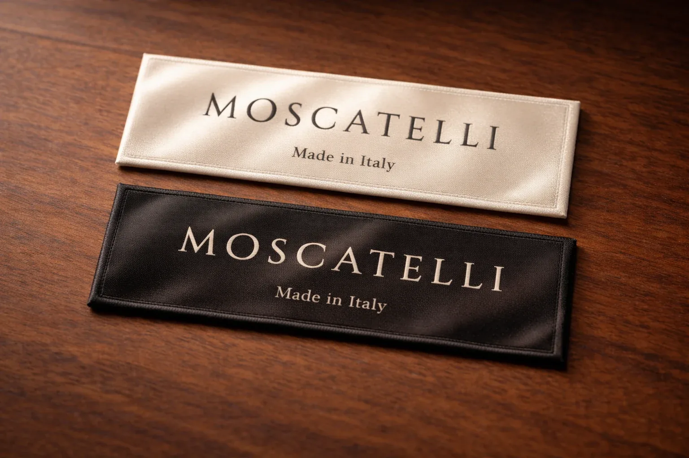

Launch priority
Scarf capsule first: Bianco Avorio and Terra Bruna, ivory rigid box, oxblood ritual kept discreet.
Rome / internal studio / authorial control
This room exists to keep Moscatelli coherent: image, material, ritual, people, and launch decisions held in one controlled surface.
Launch must feel institutional, not promotional. The first task is not breadth but authority: a small capsule, exact packaging, disciplined imagery, and decisions that can survive scrutiny.
Scarf capsule first: Bianco Avorio and Terra Bruna, ivory rigid box, oxblood ritual kept discreet.
Nothing advances without physical validation, founder sign-off, and evidence worth archiving.
Proof of sales before outside capital. Scale follows traction; it never substitutes for it.
Calm exterior. Warm-stone light. Controlled fringe.

The darker counterweight: earth, depth, permanence.

Institutional calm. Blind presence. No loud signature.
Oxblood appears as hidden gravity: wax, fold, and interior moment.
Quiet surfaces.
Exact edges.
Emotional authority at close range.
Current workstreams: scarf sampling, label language, box proportions, launch imagery, and the invisible details that make the house feel inevitable.

Soft interior label logic. Quiet typography. “Made in Italy” held with dignity, never noise.
Baby alpaca with a compact matte surface and disciplined fall.
Founder-only final sign-off, archived evidence, no casual approvals.
Ivory calm outside; oxblood gravity reserved for the interior moment.
Keep the circle small. Keep the standard absolute.
Final validation, institutional tone, and the non-negotiable standard.
Narrative discipline, market framing, and commercial alignment.
Task flow, follow-through, operational rhythm, and continuity across the team.
Prato mills, Biella intelligence, rigid-box partners, and the physical truth of materials on the ground.
Rome as house gravity. Brazil as working extension. Prato first, Biella second. Proof before capital.